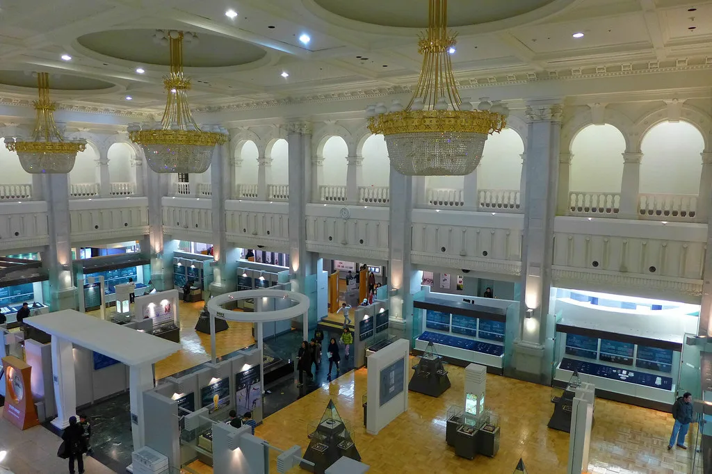

한국은행이 올해 마지막 통화정책방향 회의에서 기준금리를 다시 끌어올렸다. 한은 금융통화위원회는 26일 회의를 열고 기준금리를 연 3.00%에서 3.25%로 0.25%포인트 인상했다. 신현송 총재를 포함한 금통위원 7명이 모두 참석한 가운데 내려진 결정으로, 지난 10월 한 차례 숨을 고른 뒤 석 달 만에 다시 긴축 쪽으로 방향을 잡은 셈이다.
이번 인상은 올해 들어 세 번째다. 한은은 7월과 8월 두 달 연속 금리를 올린 뒤 10월에는 동결하며 그간의 인상 효과를 지켜봤다. 시장은 이번 결정을 어느 정도 예상하고 있었다. 회의를 앞두고 진행된 전문가 설문에서 응답자 전원이 인상을 점쳤고, 결과도 그 전망과 일치했다. 연 3.25%는 약 2년 만에 가장 높은 수준으로, 다음 금통위가 내년 1월에 열리는 만큼 연말까지는 이 금리가 유지될 전망이다.

금리 인상의 배경으로는 반도체 수출 호조와 근원물가 오름세가 꼽힌다. 반도체를 중심으로 경기가 예상보다 강하게 살아나면서, 물가 압력을 미리 관리할 필요가 커졌다는 해석이다. 경기가 뜨거워지는 국면에서 금리를 낮은 수준에 묶어두면 물가와 자산시장에 과열 신호가 번질 수 있다는 점도 고려된 것으로 보인다. 기준금리는 대출과 예금 금리, 환율, 자산 가격 등 경제 전반에 폭넓게 영향을 미치는 만큼, 한은으로서는 성장의 흐름을 해치지 않는 범위에서 물가 안정을 우선하겠다는 신호를 시장에 보낸 것으로 풀이된다.
같은 날 발표된 수정 경제전망은 이런 판단을 뒷받침한다. 한은은 올해 경제성장률 전망치를 지난 8월의 3.3%에서 3.9%로 0.6%포인트 올렸다. 내년 전망치는 2.9%에서 4.1%로 1%포인트 넘게 끌어올렸다. 반도체가 만들어내는 성장 효과가 다른 하방 요인을 충분히 상쇄하고도 남는다고 본 것이다. 이번에 처음 제시된 2028년 성장률 전망은 3.0%였다.
물가 전망은 소폭 조정에 그쳤다. 올해 소비자물가 상승률 전망은 기존과 같은 2.7%로 유지됐고, 내년 전망치는 2.3%에서 2.4%로 0.1%포인트 높아졌다. 2028년 물가상승률은 2.1%로 제시돼 중장기적으로는 물가안정 목표인 2% 부근으로 수렴할 것으로 내다봤다. 성장률이 크게 오르는 데 비해 물가 전망 상향 폭은 크지 않다는 점에서, 선제적 금리 인상으로 물가를 안정적으로 관리하겠다는 의지가 읽힌다.

다만 금리 인상이 모두에게 반가운 소식은 아니다. 대출 금리가 기준금리를 따라 오르면 가계와 자영업자의 이자 부담이 커질 수밖에 없다. 반도체 업종이 성장을 이끄는 사이 내수와 중소기업의 체감 경기는 여전히 차갑다는 지적도 꾸준하다. 변동금리 대출 비중이 높은 가계라면 이번 인상분이 시차를 두고 매달 갚는 이자에 반영될 가능성이 크다. 성장의 온기가 고르게 퍼지지 않는 상황에서 금리 부담이 겹치면 업종과 계층 간 격차가 더 벌어질 수 있다는 우려가 나오는 이유다.
시장의 관심은 이제 내년 금리 경로로 옮겨가고 있다. 내년 성장률이 4%를 넘을 것이라는 한은의 전망이 현실화된다면 추가 인상 논의도 이어질 수 있다. 반면 반도체 경기가 꺾이거나 대외 무역 환경이 악화하면 속도 조절론이 힘을 얻을 수 있다. 1월 금통위까지 발표될 물가와 수출 지표, 그리고 한은 총재의 향후 발언이 금리 방향을 가늠할 핵심 단서가 될 전망이다.